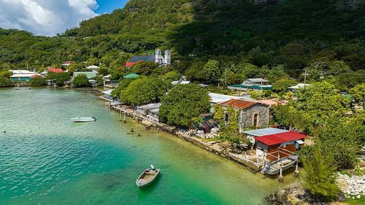

Gambier Islands
Mangareva is the main island of the Gambier Islands. This stop introduces the island and its town of Rikitea.

Explore five archipelagos through island landscapes.
Mangareva is the main island of the Gambier Islands. This stop introduces the island and its town of Rikitea.
